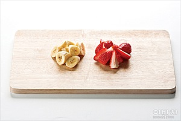
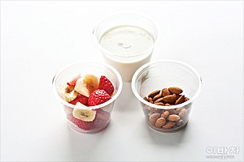
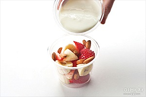
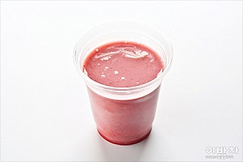

[ 이밥차 ]
봄을 담은 한입 요리
딸바요구르트 컵샐러드
상큼한 도시락 후식

4월의 대표 과인 딸기와 언제나 구하기 쉬운 바나나를
플레인요구르트에 버무려 상큼하게 즐겨요.
재료
2인분
필수재료
| 딸기(10개) | 바나나(1개) | 플레인요구르트(1개) | 아몬드(적당량)
(숫자)는 밥 숟가락 계량 기준 입니다.
만들기
(총 3단계)
-

STEP1
딸기와 바나나는 먹기
좋은 크기로 썰고,Tip.바나나는 통으로 가져가서 먹기 직전에 포크로 조각내도 좋아요.
-

STEP2
컵에 과일과 아몬드,
플레인요구르트를 각각
담아 준비하고,Tip.요구르트는 시판 제품 그대로 가져가도 좋아요.
-

STEP3
먹기 직전 과일에 아몬드와
플레인요구르트를 뿌려 마무리. -

Tip.
딸기와 바나나, 플레인요구르트를
믹서에 갈면 달콤하고 부드러운
딸바요구르트 주스가 돼요.
기호에 따라 설탕이나 꿀을 첨가하세요